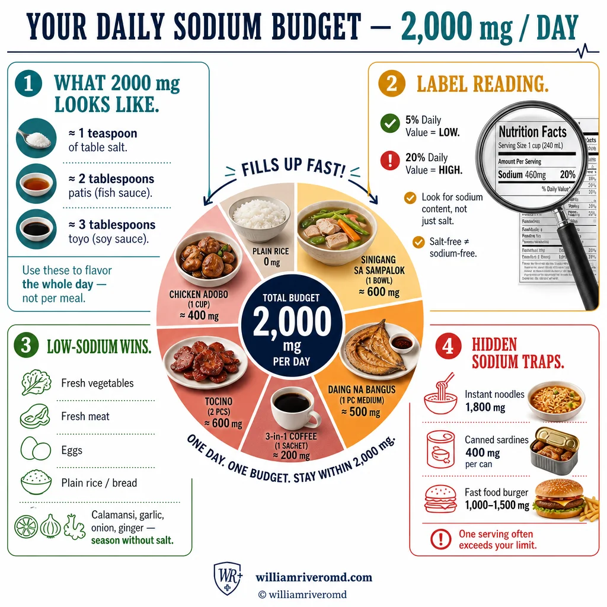
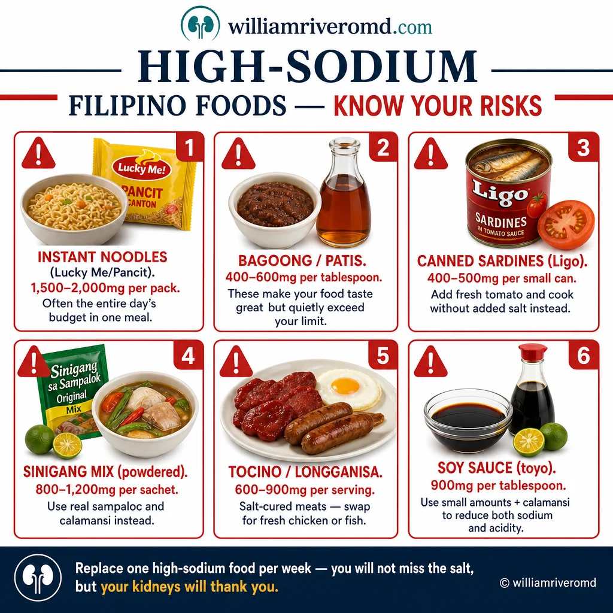
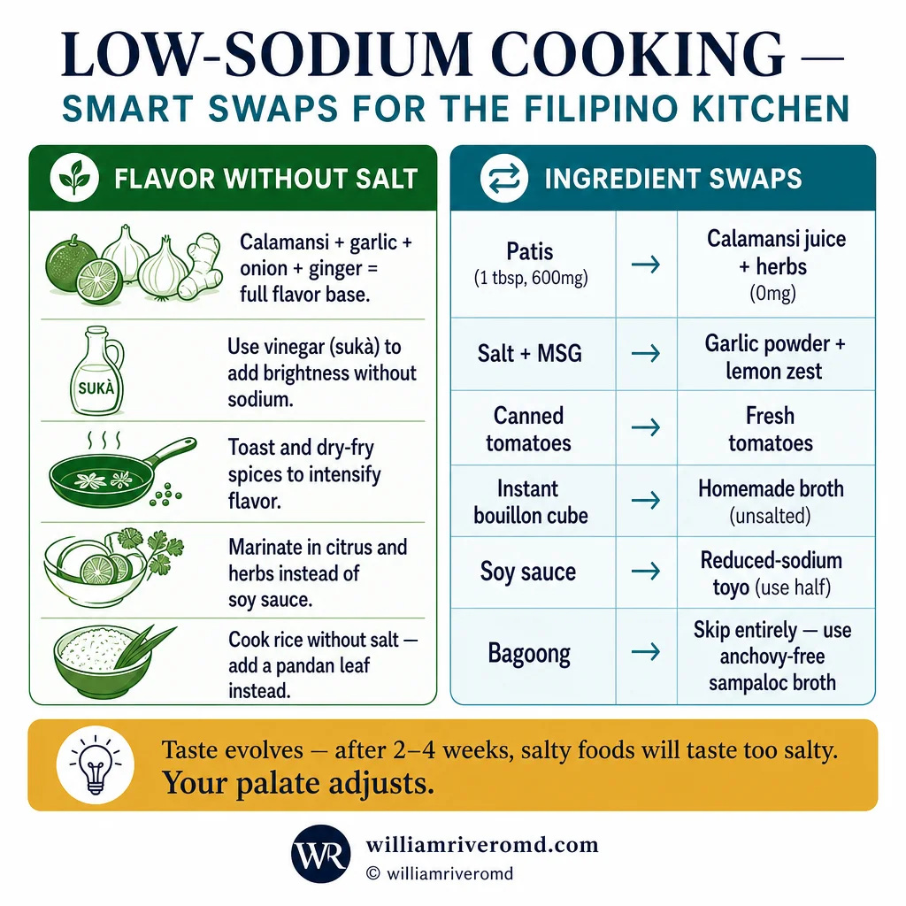
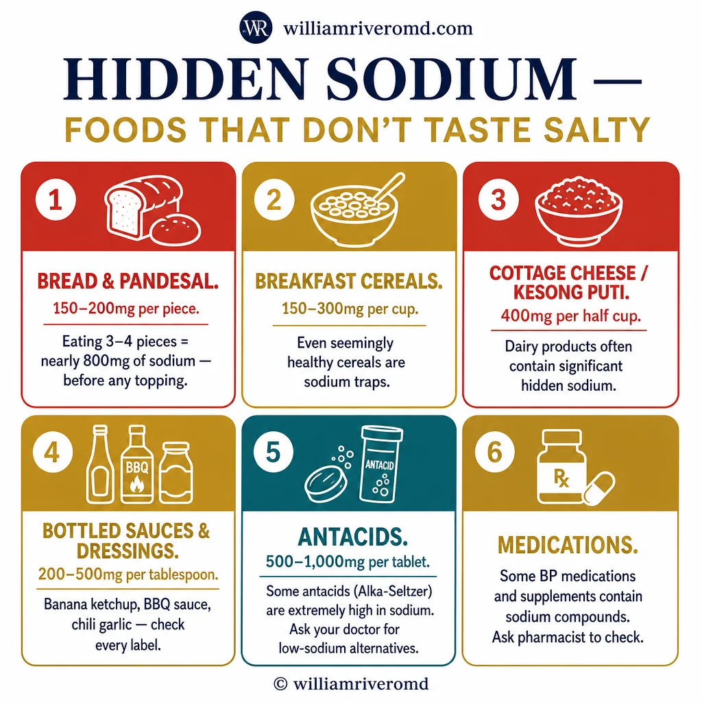

| Sodium & Salt Reduction Guide for CKD | W.G.M. Rivero MD · FPCP · DPSN · PRC 0101184 · williamriveromd.com · 2026 |
|
Patient Education · Nephrology & Internal Medicine
Sodium & Salt Reduction
in CKD Your most powerful daily choice for kidney protection — sodium targets, hidden salt in Filipino foods, and practical cooking swaps. Tailored for Filipino patients.
|
🧂
W.G.M. Rivero MD
FPCP · DPSN Nephrologist
williamriveromd.com
|
< 2,300 mg Daily Sodium Target |
1 tsp Salt Equivalent |
80% Filipinos Exceed Limit |
↓ BP Main Benefit in CKD |
In healthy kidneys, excess sodium is filtered and excreted in urine with no lasting effect. In CKD, this filtering capacity is reduced — so sodium accumulates in the bloodstream, pulling water with it. The result is a chain reaction: fluid retention → higher blood volume → elevated blood pressure → increased shear stress on glomeruli → faster kidney damage.
Sodium also directly stimulates the renin-angiotensin-aldosterone system (RAAS) — the very pathway that ACE inhibitors and ARBs block. A high-sodium diet partially overrides the benefit of these kidney-protecting medications. Reducing sodium amplifies their effect without changing your dose.
In proteinuric CKD, excess sodium increases urinary protein leakage — proteinuria is itself a driver of progression. Studies show sodium restriction can reduce proteinuria by 20–30% independently of blood pressure changes. In dialysis patients, high interdialytic sodium intake causes excessive fluid gain between sessions, raising the risk of pulmonary edema and cardiovascular death.
🩸 Blood Pressure
Sodium raises BP by expanding blood volume. Every 1 g reduction in daily sodium lowers systolic BP by ~2–3 mmHg in CKD patients — more than in the general population.
|
💧 Fluid Retention
1 g of sodium retains ~150 mL of water. A 3 g sodium excess = ~450 mL extra fluid — ankles swell, lungs become congested, dialysis sessions become harder.
|
🔬 Proteinuria Reduction
Low-sodium diet reduces urinary protein loss by 20–30% in proteinuric CKD — slowing the scarring that drives kidney function decline.
|
| CKD Stage | eGFR | Daily Sodium Limit | Rationale |
|---|---|---|---|
| Stage 1–2 | > 60 mL/min | < 2,300 mg | Blood pressure control; preserve residual kidney function |
| Stage 3 | 30–59 mL/min | < 2,000 mg | Proteinuria reduction; slow progression of kidney scarring |
| Stage 4–5 (pre-dialysis) | 15–29 mL/min | 1,500–2,000 mg | Fluid and BP control; reduce urgency for dialysis start |
| Hemodialysis | on HD | 1,500–2,000 mg | Minimize interdialytic fluid gain between sessions |
| Peritoneal Dialysis | on PD | 1,500–2,300 mg | Ultrafiltration preservation; avoid high-strength glucose bags |
Most Filipino condiments deliver this in just 2–3 tablespoons: patis (fish sauce) has 1,190 mg per tablespoon; toyo (soy sauce) has 920 mg; bagoong (shrimp paste) has 1,600 mg. Many Filipinos consume 4,000–6,000 mg of sodium daily — 2–3× the CKD limit — primarily through condiments and processed foods used during cooking.
| For educational use only. This guide does not replace individualized dietary advice from your physician or dietitian. References: KDIGO 2024 CKD Guidelines · WHO Sodium Guidelines 2023 · Philippine NKTI Dietary Recommendations · Saran et al., CJASN 2017. | williamriveromd.com Page 1 of 8 · williamriveromd.com/guides/sodium-salt-reduction-ckd |
| Sodium & Salt Reduction Guide for CKD | W.G.M. Rivero MD · FPCP · DPSN · williamriveromd.com · 2026 |

| For educational use only · Not a substitute for individualized medical advice · williamriveromd.com | williamriveromd.com Page 2 |
Filipino Foods — Sodium Content Reference Know Your Sodium Sources · All values per standard serving |
Page 3 of 8 · williamriveromd.com |
| Food | Serving | Sodium | Notes for CKD Patients |
|---|---|---|---|
| 🔴 HIGH SODIUM — Avoid or severely limit (> 500 mg per serving) | |||
| Patis (fish sauce) | 1 tbsp (15 mL) | 1,190 mg | Most used Filipino condiment — most dangerous source in CKD |
| Bagoong (shrimp paste) | 1 tbsp | 1,600 mg | Extreme — avoid completely in CKD; also very high phosphorus |
| Instant mami / pancit canton | 1 pack | 1,800–2,200 mg | Entire day's limit in one meal — never eat in CKD |
| Chicken / beef bouillon cube (Magic Sarap) | 1 cube | 950 mg | Hidden in most Filipino home cooking — major underestimated source |
| Toyo (soy sauce) | 1 tbsp | 920 mg | Switch to low-sodium soy sauce (Kikkoman Less Sodium: ~575 mg/tbsp) |
| Dried fish — tuyo, danggit, dilis | 1 piece / handful | 600–1,000 mg | Extremely high — avoid in CKD; fresh fish is always the better choice |
| Spam / luncheon meat | ½ can (85 g) | 790 mg | Also very high in phosphorus additives — double threat in CKD |
| Hotdog / longganisa | 1 piece (60 g) | 500–700 mg | Processed meat — also high in phosphorus additives and saturated fat |
| Lechon / crispy pata | 100 g | 700–900 mg | Also high in potassium and phosphorus; avoid on feast days especially |
| 🟡 MODERATE — Use carefully (100–500 mg per serving) | |||
| Oyster sauce | 1 tbsp | 490 mg | Use sparingly; reduce other sodium sources on same meal |
| Canned sardines (undrained) | ½ can (55 g) | 380 mg | Rinse canned sardines 3× under water to reduce sodium by ~200 mg |
| Cheese — Eden, quick-melt (1 slice) | 1 slice (20 g) | 290 mg | Also high in phosphorus — limit in CKD 3–5 |
| Instant oatmeal (flavored packet) | 1 pack | 250 mg | Use plain unflavored oats — 0 mg sodium and much more kidney-friendly |
| Ketchup (banana ketchup) | 1 tbsp | 190 mg | Also high in sugar; use in moderation |
| White bread / pandesal | 1 piece | 160 mg | Hidden sodium — adds up quickly when eating 3–4 pieces at breakfast |
| 🟢 LOW SODIUM — Safe choices (< 100 mg per serving) | |||
| Fresh bangus / tilapia (raw) | 100 g | 60–80 mg | Excellent protein source — cook without added salt or patis |
| Fresh chicken (raw, no marinade) | 100 g | 75 mg | Avoid pre-marinated commercial chicken (often ~400–600 mg sodium) |
| Fresh eggs | 1 large | 70 mg | Good low-sodium protein; cook without added salt |
| Rice (cooked, plain) | 1 cup | 0 mg | Sodium-free staple — do not cook rice with salt |
| All fresh vegetables | 1 cup | 5–30 mg | Naturally very low sodium — cook without salt, season with calamansi |
| Kamote, gabi, cassava | 1 serving (100 g) | 10–30 mg | Naturally low sodium; boil without salt; check potassium in CKD 4–5 |
| Sukang paombong (native vinegar) | 1 tbsp | 0 mg | Excellent safe flavor substitute — use generously in dipping and cooking |
| Calamansi | 1 piece | 0 mg | Best natural flavor enhancer in Filipino cooking — zero sodium |
| Garlic, onion, ginger (fresh) | 1 tsp | 0–2 mg | Use generously as salt-free flavor base — the CKD cook's best friends |
| FNRI Philippine Food Composition Tables 2023 · USDA FoodData Central · KDIGO CKD Guidelines 2024 · Educational use only. | williamriveromd.com · Page 3 of 8 |
| Sodium & Salt Reduction Guide for CKD | W.G.M. Rivero MD · FPCP · DPSN · williamriveromd.com · 2026 |

| For educational use only · Not a substitute for individualized medical advice · williamriveromd.com | williamriveromd.com Page 4 |
Smart Cooking Swaps · Hidden Sodium Sources Replace, Not Remove — Keeping Filipino Food Flavorful Without Salt |
Page 5 of 8 · williamriveromd.com |
| Instead of → | Use This | Sodium Saved |
|---|---|---|
| Patis (1 tbsp · 1,190 mg) | Calamansi + garlic + black pepper | ~1,190 mg |
| Toyo / soy sauce (1 tbsp · 920 mg) | Low-sodium soy sauce, ½ tbsp (Kikkoman) | ~630 mg |
| Magic Sarap / chicken cube (1 cube · 950 mg) | Homemade ginger-garlic-onion broth base | ~900 mg |
| Instant mami / pancit canton (1 pack · 2,000 mg) | Home-cooked bihon with fresh ingredients, no cube | ~1,600 mg |
| Bagoong (1 tbsp · 1,600 mg) | Tiny sautéed shrimp with garlic + calamansi | ~1,400 mg |
| Table salt (1 tsp · 2,300 mg) | Tanglad (lemongrass), dahon ng laurel, pandan, herbs | ~2,300 mg |
| Canned sardines undrained (380 mg) | Rinse canned sardines 3× under cold water | ~200 mg |
| Processed cheese / Eden (290 mg/slice) | Avocado (in moderation) or fresh coconut cream | ~250 mg |
| Oyster sauce (1 tbsp · 490 mg) | Diluted low-sodium soy sauce + a drop of sesame oil | ~350 mg |
Instant coffee (Kopiko 3-in-1): 120 mg per sachet — drinking 3 cups = 360 mg before food. | Pandesal: 160 mg each — 4 pieces for breakfast = 640 mg. | Commercial kakanin (puto, suman, bibingka): 100–300 mg per piece from baking powder and salt. | Powdered juice drinks (Tang, Zesto): 30–80 mg per glass. | Restaurant meals: Jollibee palabok ~2,100 mg · McDonald's burger ~800 mg · carinderia nilaga (commercial broth base) ~1,200 mg. | Bread / tasty: 190 mg per slice — a baon sandwich = 380 mg before fillings.
🍗 Jollibee / Fast Food
|
🥘 Carinderia / Turo-Turo
|
🍱 Home Cooking Tips
|
| KDIGO CKD Nutrition Guidelines 2024 · WHO Global Sodium Guidelines 2023 · FNRI Philippine Food Composition Tables 2023 · Educational use only. | williamriveromd.com · Page 5 of 8 |
| Sodium & Salt Reduction Guide for CKD | W.G.M. Rivero MD · FPCP · DPSN · williamriveromd.com · 2026 |

| For educational use only · Not a substitute for individualized medical advice · williamriveromd.com | williamriveromd.com Page 6 |
| Sodium & Salt Reduction Guide for CKD | W.G.M. Rivero MD · FPCP · DPSN · williamriveromd.com · 2026 |

| For educational use only · Not a substitute for individualized medical advice · williamriveromd.com | williamriveromd.com Page 7 |
7-Day Reduction Plan · Label Reading · Salt Substitutes Warning Start Today — One Change per Day · Reading Labels · Critical Safety Warnings |
Page 8 of 8 · williamriveromd.com |
| Day | Goal | Action |
|---|---|---|
| 1 | Remove salt shaker from table | Replace with calamansi halves + freshly ground black pepper at every meal. Taste food before reaching for any seasoning. |
| 2 | No patis today | Flavor all food with fresh garlic, ginger, calamansi, and sukang paombong. Notice how much flavor is already in properly cooked food. |
| 3 | Switch to low-sodium soy sauce | Buy Kikkoman Less Sodium or similar. Use only ½ tablespoon maximum per dish. Keep the regular toyo out of reach. |
| 4 | Cook sabaw / soup without bouillon cube | Use a ginger-garlic-onion broth base: simmer aromatics in water 20 minutes for full flavor. No Magic Sarap, no Knorr cube today. |
| 5 | Check every label for sodium | Read every packaged food: target < 200 mg per serving. Calculate how many servings you actually eat — often 2–3× the label serving. |
| 6 | No instant noodles — cook bihon instead | Home-cook bihon with fresh vegetables, a little chicken, garlic-onion base, and low-sodium soy. Saves ~1,600 mg of sodium. |
| 7 | Family sodium audit | Review the week with your family: which change was hardest? Which tasted surprisingly good? Plan which swaps to keep permanently. |
① Sodium per serving
Always check sodium per 100 g for honest comparison between products. A "low sodium" label means < 120 mg per 100 g. "Reduced sodium" means 25% less than the original product — which may still be very high.
|
② What counts as one serving?
Philippine food labels often list a "serving size" that is smaller than what people actually eat. A pack of instant noodles may say "2 servings" — but most Filipinos eat the whole pack. Always multiply the sodium value by actual servings consumed.
|
③ Look for hidden names
Sodium hides under many names: monosodium glutamate (MSG), sodium bicarbonate (baking soda), sodium benzoate (preservative), disodium phosphate. All count toward your daily limit. If sodium appears in the first 5 ingredients, the food is high in sodium.
|
Products like NuSalt, NoSalt, and local potassium chloride (KCl) salt substitutes replace sodium with potassium. In CKD patients — especially stages 4–5 and dialysis — impaired potassium excretion means this extra potassium accumulates rapidly in the blood, potentially causing life-threatening hyperkalemia (high potassium): irregular heartbeat, cardiac arrest, and death. Do NOT use any salt substitute without explicit approval from your nephrologist. This warning applies even if you see them sold in health food stores or recommended for "heart health."
MSG contains approximately 12% sodium by weight — compare to table salt at 39% sodium. While MSG allows you to use less salt for the same flavor intensity, 1 teaspoon of MSG still contributes approximately 492 mg sodium. It is not a free flavor enhancer in CKD. Some recipes use both salt AND MSG together, dramatically exceeding sodium limits. Use fresh aromatics (garlic, ginger, calamansi, tanglad) instead — these have zero sodium and superior flavor complexity.
| For educational use only. This guide does not replace your nephrologist's or dietitian's individualized advice. Sodium targets vary by kidney function, medications, fluid status, and comorbidities. References: KDIGO 2024 · WHO Sodium Guidelines 2023 · Philippine NKTI Dietary Recommendations · Saran et al., CJASN 2017 · McMahon et al., JASN 2013. | williamriveromd.com Page 8 of 8 · williamriveromd.com/guides/sodium-salt-reduction-ckd |